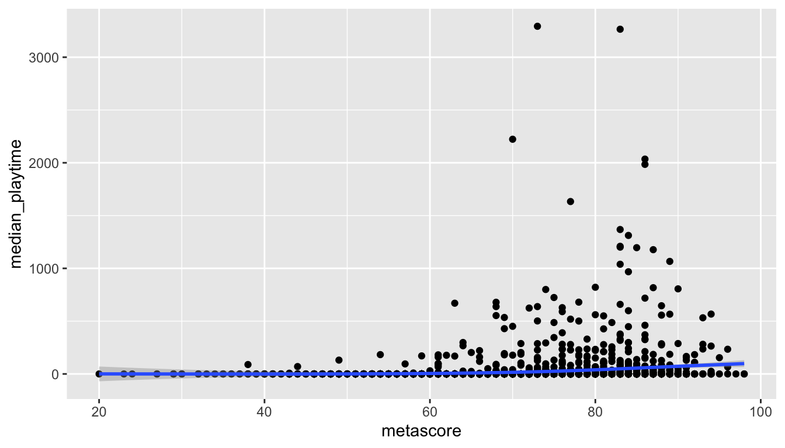
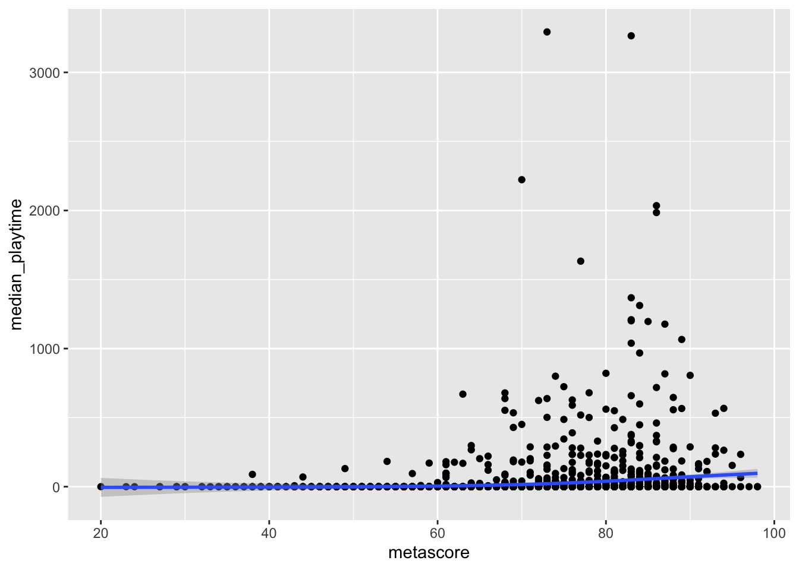

5 Workflow and Other Skills
Goals:
- Describe how files are organized in an
Rproject, describe the advantage of a common working directory through anRProject, and use theherepackage to assist in accessing and reading in files. - Use strategies to debug code that is not working correctly.
- Explain how the context a data set comes from informs the analysis of the data.
- Find missing values and outliers, and explain how these might affect conclusions from a data analysis.
- Use
tibbleto create data sets inR, and describe the benefits of reprexes.
The topics of this section are varied: many are meant to bring us up to speed on certain aspects of R that we have glossed over. We will begin by discussing more about R Projects.
5.1 R and File Organization
R Projects are a convenient way to keep related code, data sets, and analyses together. Read this very short introduction in R for Data Science here: https://r4ds.had.co.nz/workflow-projects.html#paths-and-directories and https://r4ds.had.co.nz/workflow-projects.html#rstudio-projects.
Why should you rarely use an absolute directory?
Look at the top of your bottom-left terminal window. If you’ve made an R project (which you should have!), you should see that a file path that is the current folder you’re working in. This is where R Studio will look for files by default.
The here package can help keep track of where files are and with reading in files. Install the here package with install.packages("here"). Then, load the package and run the here() function with
here() prints the directory of where your current R project is. When reading in a data set with read_csv(), we would use
R can read in this data set successfully: it starts at the path given in the console that was printed from here(), looks for a folder called data in that path and looks for a file called athletesdata.csv in the data folder.
So, if you zipped up your project and sent it to someone else, they’d be able to open it and read that data file without needing to change any directory code!
The here() function from the here package can be used for more than just printing out the current working directory. To see its usefulness, suppose that, in the folder that has your current R project, you want to make a folder called Quizzes that has your .qmd files for your quizzes in this class. Make this folder, create a new .qmd file, paste in the R chunk that reads in the athletesdata.csv data set, save the file, and then try to render the file.
You should get an error that the athletesdata.csv data file is not found. When rendering a .qmd file, R looks for the data/ folder within the folder that contains the .qmd file. Since the data/ folder is in the folder with your R Project, not in the folder with your .qmd file, R can’t find it.
To fix the issue, we could specify the entire file path to the data/ file. But, a better fix would be to use the here() function, which tells R to start looking for folders and files in the folder with our R Project:
This allows us to have Quarto files within folders in our R project. Including here() specifies that we want R to start looking for our file at the Project directory, not at the directory where the qmd file is.
5.1.1 Exercises
Exercise 1. Take some time to modify your files in this course by creating a Quizzes folder. Move the relevant files to these folders and modify each file to load in the here package and use the here() function to read in any relevant data sets. We’ve been using the here() function quite a bit already in those Quizzes so it may already be there!
5.2 Code Style
Writing code that is “readable” is helpful not only for others but also for yourself, especially if the project you are working on is long-term. What constitutes “readable” code varies a bit, but there are some general principles that are more widely accepted for “good” code. Much of the coding “style” you have seen so far has been imposed by me: I have my own style for writing code so naturally, I use that style in the code I write for our course materials.
Object Names
Names of objects that we create should be descriptive yet short. Sometimes, thinking of a name that makes sense can be very challenging! Some examples of “bad” names for objects include names that are too generic that we won’t be able to distinguish them later:
Better names for the above data frames would be cyl4_df, cyl6_df, and cyl8_df, respectively, as these names tell us more about what is in each data frame.
Other “bad” names for objects are names that are too long:
cars_with_4_cylinders_data_set <- mtcars |> filter(cyl == 4)Long names are descriptive but can be a pain to type out and to read.
You may have noticed that my coding “style” is to separate words in names with an _: cyl4_df. Others may choose to separate words in names with a .: cyl4.df while others may use capitalization for the second word: cyl4Df. The most important thing here is to be consistent in your choice. In other words, using _ instead of . isn’t necessarily better, but it would be poor practice to mix naming notation, as in:
If we mixed, then we always have to keep track of whether an object is named with _ or . or with capitalization.
Finally, you may have noticed that most of our data frames our named with the suffix _df. I have worked that into my own coding style because I like keeping track of what is a dataframe (or tibble) and what isn’t. This is generally more helpful as you encounter different types of objects (model output, lists, matrices, vectors, etc.).
Exercise 2. Change the following object names to be “better:”
cars_where_wt_is_larger_than_3_tons <- mtcars |> filter(wt > 3)5.3 Code Readability
We can also follow some general practices to make our code more “readable.” We have already been employing most of these practices throughout the semester: R Studio generally makes code readable by indenting appropriately.
Appropriately using spacing can make code much more readable. Consider the following ggplot() code. For example, the following code chunk executes a scatterplot with a fitted regression line but it’s generally tough to read.
ggplot(data=mtcars,aes(x=wt,y=drat))+geom_point()+geom_smooth(method="lm",se=FALSE)
A couple of conventions can help: (1) spaces around any equal sign, plus sign, and after any comma and (2) putting code after each plus sign on a different line.
ggplot(data = mtcars, aes(x = wt, y = drat)) +
geom_point() +
geom_smooth(method = "lm", se = FALSE)
Indenting subsequent lines in ggplot2 code or in a dplyr pipeline shows that the subsequent lines “go with” the first line:
ggplot(data = mtcars, aes(x = wt, y = drat)) +
geom_point() +
geom_smooth(method = "lm", se = FALSE)The same concepts of using multiple lines holds for a piping statement as well. In general,
is easier to read than
Exercise 3. Change the style of the following code to make the code more readable.
ggplot(data=mtcars,aes(x = mpg))+geom_histogram(colour="black",fill="white",bins=15) + facet_wrap(~cyl, ncol=1)5.4 Debugging Code
The previous section on code readability can be seen as one step to helping with code debugging: code that is easier to read is code that is easier to spot errors in. Additionally, there are some other strategies we can take when our code is not working to figure out what the issue is.
We run R code for our data analyses from “top to bottom,” which makes it a bit easier to identify where the problem code is occurring. We can run our code from the top of our .qmd file, line by line, until we see the red Error message.
Often this Error message will occur in a ggplot statement or a piping statement. If this is the case, then a further strategy is to run the ggplot statement + sign by + sign or to run the piping statement pipe by pipe to further isolate the error. For example, take the following ggplot code, which generates a somewhat cryptic error.
ggplot(data = mtcars, aes(x = wt, y = mpg)) +
geom_point() +
geom_smooth(colour = disp) +
facet_wrap(~ cyl) In this case, the error message does help us locate the issue, but that is not always the case. If we are not sure what the error is, what we can do is run
to see if we get an error. We don’t, so we move on to the code after the next + sign:
ggplot(data = mtcars, aes(x = wt, y = mpg)) +
geom_point()We still don’t get an error so we move on to the code after the next + sign:
ggplot(data = mtcars, aes(x = wt, y = mpg)) +
geom_point() +
geom_smooth(colour = disp)We have our error. So now, instead of isolating the error to a particular chunk of code, we have isolated the error to a particular line of code: we know the issue is something with how we are using geom_smooth(). (We are missing aes() to refer to the variable disp).
The same strategy can be used with piping. The following code, used to figure out the average bill length to bill depth ratio in Adelie penguins, does not give an error but instead outputs something that we might not expect: a tibble with an NaN (Not a Number) value (note that you must install the palmerpenguins package install.packages("palmerpenguins") before loading the palmerpenguins library.
We can troubleshoot by running the code “pipe by pipe,” starting with the code through the first filter() pipe:
penguins |> filter(species == "Adeie")Right away, we see a problem: we get a tibble with no data because we misspelled Adelie:
penguins |> filter(species == "Adelie")After correcting this issue, we can continue through the pipes:
There doesn’t seem to be any issues in our mutate() statement so we can go to the next pipe.
We get an NA value, and we have isolated the issue to something with summarise(), or, possibly something with mutate() that does not set something up quite right for summarise(). Can you figure out the issue?
In addition to isolating the coding issue, a couple of other very basic strategies for trying to fix problematic code are to use a search engine like google to see if anyone else has a similar error message to the one you may have and to restart R to make sure that you are working from a clean slate.
The “restart R” strategy can be particularly helpful if you have code that will run but your .qmd file will not render. This can happen if you have, for example, created a data set that you use in a later chunk of code but have since deleted the code that created that data set. For example, suppose we create cyl4_df and make a plot:
cyl4_df <- mtcars |> filter(cyl == 4)
ggplot(data = cyl4_df, aes(x = mpg)) +
geom_histogram()But, later we delete the line creating cyl4_df. The plot will still work because cyl4_df is already in our environment but the file will not render because we are missing that crucial line of code. Restarting R can help us identify this issue because the plot will no longer work and we will get a sensible error message like cyl4_df not found.
5.5 Context, Outliers, and Missing Values
The primary purpose of this section is to explore why we should always think critically about the data set we are analyzing as opposed to simply making summary tables without thinking about how they could be interpreted. In other words, we need to both examine the data set to see if there are things like missing values or outliers that could affect interpretation as well as consider the context that the data set comes from.
5.5.1 Context
Considering context includes thinking about questions like:
where did the data set come from? Who collected it?
are there missing values coded as
NAs in the data set. Would these affect our analysis or are they missing “at random.” Missing values coded asNAare referred to as explicitly missing values.are there missing values in the data set that are not actually observations at all? These are implicitly missing. An example might be collecting data on students attending this class. Students not present at the time the data was collected are implicitly missing.
does the data come from an observational study or an experiment?
There are many other questions we could ask pertaining to context, but many such questions depend on the particular data collected. As an example, consider the data set on majors at SLU from 2015 to 2020. For now, you can ignore the extra code given to read in the data: pivoting functions and variable types are topics we will learn about in the upcoming weeks.
majors_df <- read_csv(here("data/majors.csv")) |>
pivot_longer(-1, names_to = "year", values_to = "n_majors") |>
mutate(year = as.numeric(year)) |>
rename(major = `...1`)
head(majors_df)
#> # A tibble: 6 × 3
#> major year n_majors
#> <chr> <dbl> <dbl>
#> 1 Biochemistry 2005 2
#> 2 Biochemistry 2006 6
#> 3 Biochemistry 2007 5
#> 4 Biochemistry 2008 8
#> 5 Biochemistry 2009 3
#> 6 Biochemistry 2010 7In the data, the n_majors variable represents the number of students graduating with that particular major in that particular year. For example, in the year 2005, there were just 2 students graduating with a Biochemistry major.
Suppose we are interested in trends among majors in Estudios Hispanicos (Spanish). In the United States, there are many people who speak Spanish so we might expect this to be a somewhat popular major. In particular, we want to see if there is an increase or decrease in the number of these majors since 2005. We can make a line chart with:
spanish_df <- majors_df |> filter(major == "Estudios Hispanicos (Spanish)")
ggplot(data = spanish_df, aes(x = year, y = n_majors)) +
geom_line() +
geom_smooth(se = FALSE)What would we conclude based on this plot?
The topic of this subsection is the context in which a data set arises in. So, you might guess that the conclusion one would make based on the line graph (that the spanish major at SLU seems to be in decline) does not tell the full story. In fact, about a decade ago, an International Economics Combined major was introduced, in which students complete courses in both Economics as well as foreign language studies. The most popular choice for the foreign language is Spanish.
We can make a graph of the number of International Economics Combined majors:
int_econ_df <- majors_df |> filter(major == "Int'l Economics (Combined)")
ggplot(data = int_econ_df, aes(x = year, y = n_majors)) +
geom_line() +
geom_smooth(se = FALSE)
How does the new contextual information about the International Economics major influence your conclusions about the popularity of Spanish studies at SLU?
You should find throughout the semester that the data sets on topics that you are more familiar with are easier to analyze than the data sets on topics that you are not as familiar with. A large part of the reasoning for this is that you have much more contextual information with data topics that you have prior knowledge on. That extra contextual information generally allows us to pose deeper questions, identify potentially erroneous data, and write more subtle conclusions. We will discuss context more throughout the semester and will also have another focus on context when we discuss data ethics.
5.5.2 Outliers and Missing Values
Outliers in a data analysis can affect certain summary statistics, like the mean and the standard deviation (as you learned in STAT 113). They could also be observations that warrant further investigation if we are interested in why a particular point is an outlier.
Missing values can also cause us to reach a potentially misleading conclusion if we do not carefully consider why such values are missing.
We will talk about the consequences of outliers and missing values next, but first, we will discuss how to determine if there are outliers or missing values in the data set. An easy function to use for this purpose is the skim() function from the skimr package. Install the skimr package and then use the skim() function on thevideogame_clean.csv file, which contains variables on video games from 2004 - 2019, including
-
game, the name of the game -
release_date, the release date of the game -
release_date2, a second coding of release date -
price, the price in dollars, -
owners, the number of owners (given in a range) -
median_playtime, the median playtime of the game -
metascore, the score from the website Metacritic -
price_cat, 1 for Low (less than 10.00 dollars), 2 for Moderate (between 10 and 29.99 dollars), and 3 for High (30.00 or more dollars) -
meta_cat, Metacritic’s review system, with the following categories: “Overwhelming Dislike”, “Generally Unfavorable”, “Mixed Reviews”, “Generally Favorable”, “Universal Acclaim”. -
playtime_miss, whether median play time is missing (TRUE) or not (FALSE)
The data set was modified from https://github.com/rfordatascience/tidytuesday/tree/master/data/2019/2019-07-30.
skim(videogame_df)See if you can find in the output the following:
- the number of rows in the data set and the number of columns
- the number of missing values for each variable
- the number of unique values for each character variable
- the completion rate (the proportion of values that are non-missing).
In particular, the number of missing values is given by nmissing and complete_rate gives the proportion of values that are non-missing. These give us some idea about if missing values exist for certain variables, and, if so, how many exist for each variable.
Also, at the bottom of the output, you should see tiny histograms of each numeric variable and some summary statistics. Looking at the min, max, and the histograms of each variable can inform us about whether each variable has any outliers. For example, we see that the histograms for price, median_playtime, and average_playtime all look extremely skewed right because of the outlier(s) on the upper end.
So, we now know that there are outliers and missing values for certain variables in the videogame data set. How might these affect the tables and graphs that we make?
First, let’s focus on the metascore variable, which gives Metacritic’s overall aggregated review score for the videogames. Note that the complete_rate for the metascore variable is only 0.107: almost 90% of the videogames do not have a metascore.
So, suppose we are interested in exploring what the “typical” metascore is. We can figure out what the average metascore and what the median metascore of the non-missing videogames is with:
Ignoring the missing values, we would say that, on average, videogames receive metascores around 72 points. The question we need to ask ourselves is: “Is it reasonable to assume that the missing games receive similar reviews to the non-missing games so that we can thin about the 71.9 as the average review score of all games?”
How you answer might depend on what you understand about videogames and the review process. But I would argue that the missing games would be reviewed worse than the non-missing games. Major games usually get the most reviews and also usually have the most funding while there are many minor games that have little funding, would not get reviewed, and, if they did get reviewed, may get a lower rating.
You can certainly make a different argument: we don’t know if my argument is correct or not without further data. The most important thing to do is to at least think about and make clear possible limitations in your conclusions from a data analysis.
As a second example, consider an exploration of the relationship between median_playtime of a game and its metascore. We can make a scatterplot of the relationship, ignoring the missing values, with
ggplot(data = videogame_df, aes(x = metascore, y = median_playtime)) +
geom_point() +
geom_smooth()
We see some clear outliers, which we will talk about next, but would the missing values for metascore affect conclusions we draw from the graph? The answer would be “yes” if we think videogames with missing metascores would follow a different overall trend than those with non-missing metascores and “no” if we think that, if the videogames with missing metascores were rated, they would follow a similar trend as those already in the graph.
For this question, I would make the argument that the games would follow a similar trend. But again, that is an assumption I would need to make and need to be explicit about.
We also mentioned the idea of implicit missing values. These would be videogames that do not appear in the data set at all. In other words, was this set of videogames a sample or is it all videogames ever published in the United States? If it is a sample, how were they selected, and, if they are a convenience sample, what were the types of games that were left out?
Outliers can also pose interesting challenges in data analysis. For example, consider again the graph of median_playtime vs. metascore. To focus on outliers now, we will ignore the missing values in metascore.
ggplot(data = videogame_df, aes(x = metascore, y = median_playtime)) +
geom_point() +
geom_smooth()
We see some clear outliers in median_playtime: games with a median playtime of thousands of hours. Once again, having some knowledge about videogames can help us determine what to do with these outliers.
The most important thing to do when dealing with outliers is to be explicit about what you, as the analyst, choose to keep in the graph or summary table and what you choose to remove. If you choose to remove values, give your reasoning, and, if there is space, you can also give a second graph that has the data without removing any outliers.
In this example, a median playtime of 3000+ hours seems a bit excessive, but it’s more challenging to determine what a reasonable cutoff for “excessive” is. Is it reasonable for a game to have a median playtime of 1000 hours? What aobut 2000 hours? 500 hours? Choosing which points to keep will affect the fit of the smoother. As you may have learned in STAT 113 or STAT 213, observations that have a high control over the fit of a smoother or regression line are influential.
Exercise 4. The STAT 113 survey data set contains responses from 397 STAT 113 students from a survey that students take at the beginning of the semester. There are 5 categorical variables and 7 numeric variables. Of the categorical variables, how many variables have 0 missing values? Of the numeric variables, how many variables have 0 missing values?
5.6 Reprexes and tibble
A reproducible example, or reprex, is a chunk of code that we can give to someone else that runs without any outside data. These are used often on StackExchange. We can create a data set directly within R with the tibble() function in the tibble package. This is most useful when we want to make a small reproducible example so that someone else may help with our code.
The following code chunk is not a reprex because people would not necessarily have the data set parsedf.csv.
Suppose that we want to post on StackExchange for someone or ask a friend to help us convert a variable from a character vector with units to a numeric vector without units. We want to be able to give any possible helpers a small example data set to work with and isolate the problem or question that we have. For this, we can create our own tiny data set with tibble(), with the c() function that concatenates values together:
Why is library(tidyverse) necessary in the code chunk above for my reprex?
We can copy and paste the code chunk above to our question: it’s code that anyone can run as long as they have the tidyverse package installed, and really encourages more people to help.
As a second example, we might have a question about how to find the mean for many numeric variables. For example, in the stat113.csv file, there are many numeric variables. We can compute the mean of each numeric variable by writing a separate summarise() statement for each variable. But we also may be interested in a quicker way. So, since our helper might not have the stat113.csv file, we can create a reprex for our problem:
## is there a way to get a summary measure, like the mean, for
## all numeric variables in a data set without writing a separate
## summarise() statement for each variable?
library(tidyverse)
sum_df <- tibble(xvar = c("A", "B"), yvar = c(1, 4), zvar = c(-1, 4),
svar = c("G", "g"), tvar = c(99, 100000))Note how we included some categorical variables in our reprex data set. We want code that will work even if there are categorical variables in our data set, so we must include them in our reprex in this example to be as general as possible.
For reference, the across() function can be used to answer our question (though it’s not the point of this section). The code below reads that we should summarise() across() all variables that are numeric (is.numeric) and that our summary measure should be the mean.
Exercise 5. Use the tibble() function to make a data set with two variables: a variable called class that contains the four classes that you are currently taking and a variable called time, which gives the approximate number of hours per week that you spend on each class.
5.7 Practice
5.7.1 Class Exercises
Class Exercise 1. Click the “Packages” button in the lower-right hand window to bring up the packages menu. Instead of using library(name_of_package), you can click the check-box by the package name to load it into R. Try it out by un-checking and then re-checking tidyverse. Explain, from a reproducibility perspective, why loading packages this way is not good practice.
Class Exercise 2. Find the error in the following code chunk by running the code “+ sign by + sign).
ggplot(data = mtcars, aes(x = hp, y = drat)) +
geom_point(aes(colour = factor(gear))) +
facet_wrap(cyl) +
geom_smooth()Class Exercise 3. Find the error in the following code chunk by running the code “pipe by pipe.”
Class Exercise 4. Find the mean and median median_playtime for all videogames in the metacritic videogame data set. Then, remove the games with a median_playtime over 1000 hours. Compute the mean and median median_playtime of the data set without these games. Which measure, the mean or the median was more affected by having the outliers present?
Class Exercise 5. For Project 2, we will work with some course evaluation data for a professor at SLU. Overall, you’ll answer some questions about how the professor can improve their courses at SLU by looking at course evaluation data. The variables and data set will be described in more detail in the project description.
Suppose that you can’t figure out how to create a semester variable and a year variable from Term in evals_prof_S21.csv. (You want to split the Term variable into two variables: Semester with levels F and S and Year with levels 19, 20, and 21).
library(tidyverse)
evals_df <- read_csv(here("data/evals_prof_S21.csv"))
head(evals_df)
#> # A tibble: 6 × 10
#> Term Course Question Agree…¹ Agree Agree…² Neutral Disag…³ Disag…⁴ Disag…⁵
#> <chr> <chr> <chr> <dbl> <dbl> <dbl> <dbl> <dbl> <dbl> <dbl>
#> 1 F19 113-02 1. Cour… 9 9 1 5 0 0 0
#> 2 F19 113-02 2. Effe… 12 8 1 2 1 0 0
#> 3 F19 113-02 3. Envi… 11 8 2 3 0 0 0
#> 4 F19 113-02 5a. Fai… 5 13 3 1 1 0 1
#> 5 F19 113-02 5b. Tim… 8 12 1 2 1 0 0
#> 6 F19 113-02 5c. Con… 5 8 4 6 1 0 0
#> # … with abbreviated variable names ¹`Agree strongly`, ²`Agree Somewhat`,
#> # ³`Disagree Somewhat`, ⁴Disagree, ⁵`Disagree Strongly`Put together a reprex using tibble() that someone would be able to run to help you figure out your question.
5.7.2 Your Turn
Your Turn 1. Choose a variable in the STAT 113 data set that has some missing values that you would feel comfortable ignoring the missing values in a table or graph. Give a one to two sentence reason.
Your Turn 2. Choose a variable in the STAT 113 data set that has some missing values that you would not feel comfortable ignoring the missing values in a table or graph. Give a one to two sentence reason.
Your Turn 3. Find the error in the following code chunk by running the code “pipe by pipe.”
Your Turn 4. Choose one of the 7 dplyr functions below and suppose that you do not know that that function exists.
Write a reprex for a question you might have where using that function would be the solution.
Your Turn 5. Consider again the dplyr functions from the previous exercise. Write a reprex for a question that you actually do not know the answer to involving one of the functions.